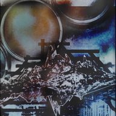

ODM WORLD
rope · blade · a monkey who remembers
hub · 2026.11.26A creature world that keeps living whether you watch or not, and the three forges that build its bodies and its ground.
PLAY →EMU MONKEY LIFE
works offlineA monkey ally with moods, emu flocks with breeds and quirks, roamers, lurkers and colossals that notice each other more than they notice you. Grapple and swing, ride emus, throw bananas, draw signs he learns from and answers in his own. Six lands, each with its own creatures and colours; shrines and a secret night rite; creatures that grow old, are mourned, and are replaced; emu abilities that breed and spread. Your arms, rope and shadow in first person.
Getting started: the controls card shows on your first visit. Reopen it any time from the UI tab → ? guide. The world forge holds photos, terrain, forest, water and models. The hub is in the world too: the red gate in your starting clearing, or the ⌂ tab on the left edge. The world remembers everything while you're away: who everyone is, how they feel, what happened. Only the two-tap reset saved in the UI deck starts it over.
LAUNCH ›BODY FORGE
b9works offlineLow-poly characters: body, face, hair, wear, cyberwear, accessories, pose and animation. Colours (and depth) can come from a photo.
Getting started: Body tab → Starting body (Monkey, Stocky, Slim…), then Face, Wear, Animate. Export → Send to game puts it in the game as the monkey or as you.
LAUNCH ›TERRA_FORGE
v1works offlineAny file becomes terrain: photos, JSON, meshes, point clouds, audio, SoundFonts, MIDI, raw bytes. Shape it, erode it, sculpt it, set a sea level.
Getting started: ＋ loads anything. SHAPE has levels, ridges and erosion (all off until you move them). ✎ sculpts. SAVE → SEND TO GAME. ? runs the tour again.
LAUNCH ›DEPTH_AI
v1needs internet onceRuns an AI depth model (Depth Anything v2, small) on one photo and hands the depth to TERRA_FORGE or BODY FORGE. Nothing else runs on this page, so the model gets the phone's memory to itself.
Getting started: LOAD PHOTO → RUN AI DEPTH → SEND. The model (about 25 MB) downloads the first time, then the browser keeps it. If it crashes, lower AI SIZE.
LAUNCH ›The send buttons work between tools on the same device and the same site. To move something to another device, save the file (share sheet → Save to Files) and load it on the other side.
| world recipe | Game → hub → save world / load world. The whole world: settings, every creature and how they feel, his words, day, ties, water, photos, terrain, cuts and both models. |
| game terrain JSON | TERRA_FORGE or DEPTH_AI → game (world forge → terrain json). TERRA_FORGE reads it back exactly. Carries sea level. |
| animated character | BODY FORGE (Animate → Save animated character file) → game, as the monkey or as you. Plain mesh JSON loads too, without the motion. |
| OBJ | BODY FORGE / TERRA_FORGE → other 3D apps. Shape and vertex colour only. |
| body settings | BODY FORGE only. The sliders themselves, so the body stays editable. |
| AI depth handoff | DEPTH_AI → TERRA_FORGE / BODY FORGE. |
Each tool remembers its own settings in this browser. Saved bodies, the last world and the gallery stay on this device and are lost if site data is cleared. Save a file to keep anything.
- 2026.11.26 · game: first person shows your arms (the rope leaves your right hand), your legs when you look down, and your shadow
- 2026.11.26 · game: creatures age and die; the land gathers to see them off; roamers become watchers, watchers grow into colossals, colossals leave bones you can swing through
- 2026.11.26 · game: emu abilities are genes that blend when they breed (skimmer, leaper, spitter, thumper, lantern)
- 2026.11.26 · game: six lands, each with a family, a flock and a watcher in its own colours; shrines and the night rite; journal, map, sound
- 2026.11.26 · new home-screen icon; text stays the same size in the home-screen app
- 2026.11.19 · one hub for the collection; the ⌂ tab on the left edge of every tool comes back here, and in the game it opens the hub inside the world (also a red gate by your spawn)
- 2026.11.19 · three.js and the font are served from this site, so everything except DEPTH_AI opens offline after one visit
- 2026.11.19 · send buttons: TERRA_FORGE → game, BODY FORGE → game
- 2026.11.19 · TERRA_FORGE terrain JSON carries sea level into the game again
- 2026.11.19 · the game remembers the living world between visits: every creature, their families, bonds and grudges, eggs, cairns, fallen trees, ties, where you and the monkey stood
- 2026.11.19 · world recipe v2 saves the whole world, living part included (v1 recipes still load), through the share sheet
- 2026.11.19 · game: world forge button error fixed; first-visit controls card